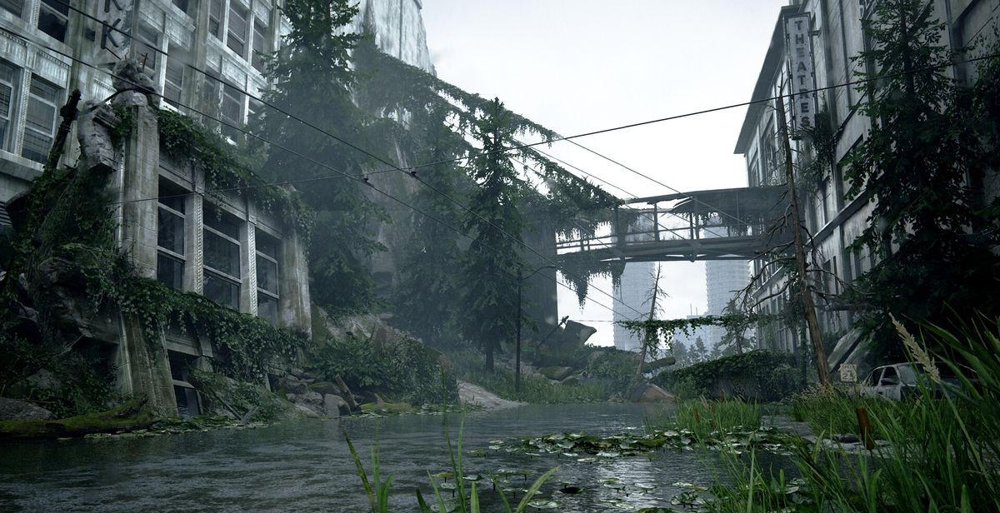
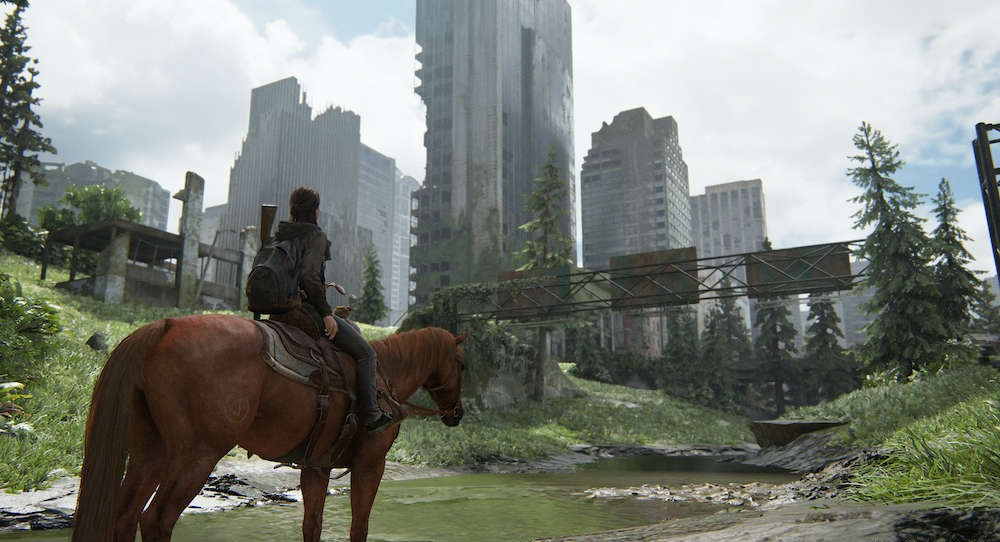
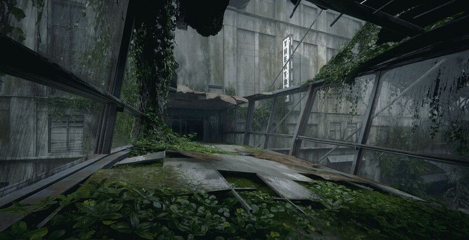

This website explores the environmental design of The Last of Us Part II and how the developers transformed downtown Seattle into a haunting post-apocalyptic world. By comparing real Seattle landmarks with their in-game counterparts, the site highlights how architecture, weather, and overgrown nature were used to create an immersive and believable environment. Through images and background information, visitors can see how thoughtful design helps tell the story and shape the emotional tone of the game.